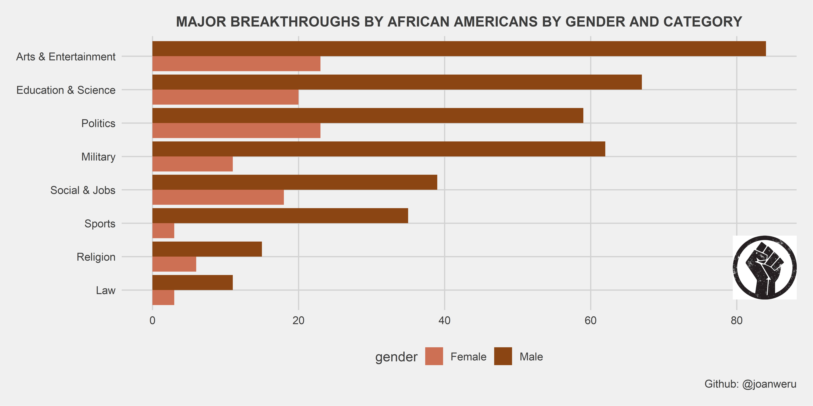
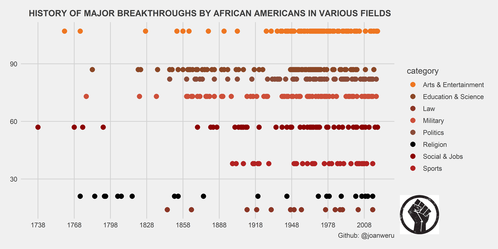
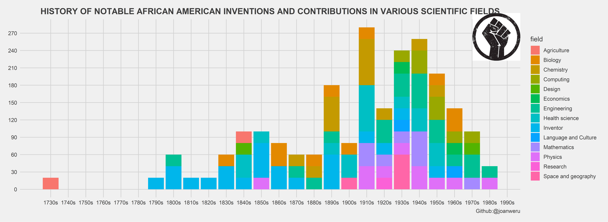

First.csv
This data set has 479 records of African Americans breaking the color barrier across a wide range of topics. It contains achievements done first by African Americans. Breakthroughs if you will.
Science.csv
This data set also celebrates the achievements of African Americans, specifically related to Patents and scientific achievements. One of the amazing scientists present in this data set is David Blackwell an African american mathematician and statistician with significant contributions to game theory, information theory, and Bayesian statistics.
The Black Lives Matter raised fist symbol
A clenched raised fist has always been a symbol of social revolution. When the Black panther group was founded in 1966 by Huey P. Newton and Bobby Seale to challenge police brutality against the African American community, the black power fist was repeatedly used as an emblem of black liberation. Photos and video footage of the Black Panthers saluting one another with raised fists at conventions, meetings and rallies solidified the symbol as synonymous with the fight for black civil rights.
The black power fist has since been adopted by several black activists and allies of the black community and has also been used during iconic events dear to the black community. For example, while receiving their medals during the 1968 Mexico City Olympics Games, American sprinters Tommie Smith and John Carlos each wore a black glove and raised their fists as the national anthem played. Nelson Mandela, the anti-apartheid activists, when released from prison raised a fist alongside his wife. During the George Floyd protests, protesters occasionally used it when protesting and spray painted the symbol on buildings and sidewalks.
Use data visualization for story telling; to visualize the history of African American achievements.
First.csvWe want to visualize the achievements by African-Americans by gender and category. We will use several data wrangling and manipulation functions for that.
The gender column has two levels: female denoted Female African American Firsts and male denoted by African-American firsts . We want to change them both to simply male and female. We will also count the achievements in each category and further look into they’re spread across each gender.
first%>%group_by(category,gender)%>%count(category,gender)%>%
ungroup()%>%mutate(category=fct_reorder(category,n))%>%
mutate(gender=case_when(str_detect(gender,"African-American Firsts")~"Male",TRUE~"Female"))%>%
ggplot(aes(x=category,y=n,fill=gender))+geom_col(position = "dodge")+
scale_fill_manual(values = c("salmon3","saddlebrown"))+
coord_flip()+theme(legend.position = "right",legend.direction = "vertical")+theme_fivethirtyeight()+
labs(title="MAJOR BREAKTHROUGHS BY AFRICAN AMERICANS BY GENDER AND CATEGORY",caption = "Github: @joanweru")+annotation_custom(g,xmin = -11,ymin = 0)+theme(plot.title = element_text(size = 12.5,hjust =0.5))
We will also visualize breakthrough achievements as they happened throughout the years.
first%>%mutate(personal=paste(person,accomplishment,sep = "----"))%>%add_count(category)%>%
ggplot(aes(x=year,y=n,color=category))+geom_point(size=3)+
scale_color_manual(values = c("chocolate2","sienna4","tomato4","tomato3","salmon4","black","red4","firebrick"))+theme_fivethirtyeight()+theme(legend.position = "right",legend.direction = "vertical",plot.title = element_text(hjust = 0.7,size = 12.5))+
scale_x_continuous(breaks = seq(1738,2050,30))+annotation_custom(g,ymin = -150,xmin = 2070)+labs(caption ="Github: @joanweru",title="HISTORY OF MAJOR BREAKTHROUGHS BY AFRICAN AMERICANS IN VARIOUS FIELDS")+coord_cartesian(clip="off")
Science.csvWe are interested in showing the achievements done by African American in various field. However looking at the data we have an occupation_scolumn with entries for various occupations.
## Factor w/ 74 levels "Acoustician; inventor",..: 45 57 41 17 33 15 2 41 38 50 ...We cannot visualize all the occupations individually. Our plot will simply be too messy to understand. We will make a new column field where each occupation is grouped into its respective field and we will visualize that instead.
science$field=case_when(str_detect(occupation_s,regex("computer",ignore_case = TRUE))~"Computing",
str_detect(occupation_s,regex("engineer|elec|robo|acous",ignore_case = TRUE))~"Engineering",
str_detect(occupation_s,regex("math|stat|prob",ignore_case = TRUE))~"Mathematics",
str_detect(occupation_s,regex("surgeon|med|nurse|dent|ophtha|psycho|surg|ortho",ignore_case=TRUE))~"Health science",
str_detect(occupation_s,regex("astr|atmos",ignore_case = TRUE))~"Space and geography",
str_detect(occupation_s,regex("chemi",ignore_case = TRUE))~"Chemistry",
str_detect(occupation_s,regex("econ|finan",ignore_case = TRUE))~"Economics",
str_detect(occupation_s,regex("physic",ignore_case = TRUE))~"Physics",
str_detect(occupation_s,regex("bio|gene|botan|epidem|zoo",ignore_case = TRUE))~"Biology",
str_detect(occupation_s,regex("resear",ignore_case = TRUE))~"Research",
str_detect(occupation_s,regex("farmer",ignore_case = TRUE))~"Agriculture",
str_detect(occupation_s,regex("art|draft|archi",ignore_case = TRUE))~"Design",
str_detect(occupation_s,regex("ling|anthro",ignore_case = TRUE))~"Language and Culture",
str_detect(occupation_s,regex("inventor|NA",ignore_case = TRUE))~"Inventor",
)I noticed two missing values that didn’t get matched so I looked up the names of the individuals with the missing values and found that both of them were inventors so i just replaced the NA with Inventor
We now visualize notable inventions and achievements by African-American in various fields throughout each decade.
science1<-science%>%mutate(decade=birth-birth%%10)%>%group_by(decade)%>%arrange(field)%>%mutate(index=row_number())%>%ungroup()
science1$decade<-as.numeric(science1$decade)science1%>%ggplot(aes(x=decade,y=n,fill=field))+geom_bar(stat = "identity")+theme_fivethirtyeight()+scale_x_continuous(breaks=seq(1730,2010,by=10),labels = paste0(seq(1730,2010,by=10),"s"))+ scale_y_continuous(breaks = seq(0,500,by=30))+
theme(legend.direction = "vertical",legend.position = "right",plot.title = element_text(size = 15,hjust = 0.5))+
annotation_custom(g,xmin =2010,ymin = -350)+coord_cartesian(clip="off")+
labs(caption = "Github:@joanweru",
title="HISTORY OF NOTABLE AFRICAN AMERICAN INVENTIONS AND CONTRIBUTIONS IN VARIOUS SCIENTIFIC FIELDS")